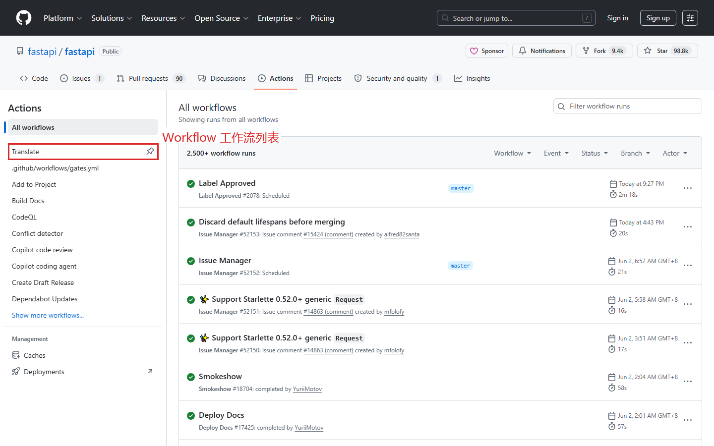
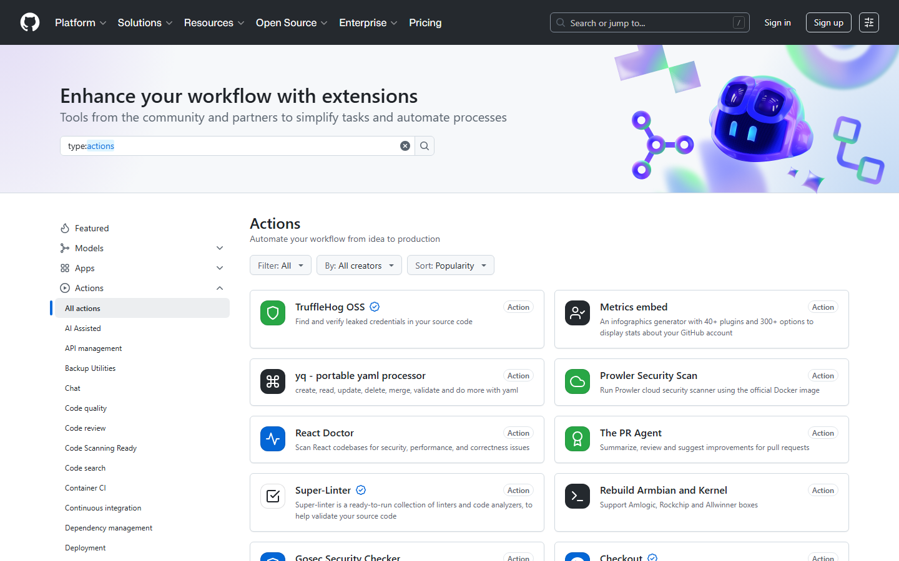

第十课：Actions / CI（上）— 概念与配置
时长：25 分钟 | 前置：第八课 | P0 词条：15 个 | 覆盖 UI 元素：12 个
学习目标
学完这节课，你能：
- 理解 CI（持续集成）是什么、解决什么问题
- 看懂 .github/workflows/ 目录下的 YAML 文件
- 在 Actions 市场找到并引用现成的 Action
- 理解 Workflow、Job、Step 三个层级
- 看懂 Workflow YAML 的基本结构
0. 开场（1 min）
画面：展示一个 CI 运行过后出现绿勾的 PR

旁白：
"在第八课我们看到了 PR 的 Checks 标签，有绿勾有红叉。这些就是 CI——持续集成。
CI 就是让机器自动帮你检查代码。每次有人 Push 代码或提 PR，GitHub 自动跑测试、检查格式、检查依赖安全。
这节课，我们来看 CI 到底是什么、怎么配。"
1. CI 是什么（4 min）
1.1 没有 CI 的痛
| 场景 | 问题 |
|---|---|
| 合并 PR 后才发现测试挂了 | 太晚了，已经合进 main 了 |
| 每个 PR 要手动跑测试 | 容易忘、效率低 |
| 代码风格不一致 | 有人用空格有人用 Tab，PR 里全是格式改动 |
1.2 有了 CI 之后
| 场景 | CI 怎么帮你 |
|---|---|
| 有人提 PR | CI 自动跑测试，绿勾=通过，红叉=有问题 |
| 有人 Push 代码 | CI 自动跑 |
| 合并前 | CI 必须通过才能 Merge（配合分支保护规则） |
| 定时任务 | 每天自动检查依赖安全漏洞 |
1.3 GitHub Actions 是什么
| 概念 | 说明 |
|---|---|
| GitHub Actions | GitHub 自带的 CI 系统 |
| 怎么配置 | 在仓库里创建 .github/workflows/ 目录，放 YAML 文件 |
| 什么时候触发 | Push、PR、定时、手动 |
| 在哪看结果 | 仓库顶部 Actions 标签 |
简单理解：Actions = GitHub 提供的免费服务器，帮你运行你写的脚本。
2. Workflow 文件的结构（8 min）
画面：打开 .github/workflows/ 目录下的一个 YAML 文件

2.1 三层结构
| 层级 | 英文 | 中文 | 含义 |
|---|---|---|---|
| Workflow | Workflow | 工作流 | 一个 YAML 文件就是一个 Workflow |
| Job | Job | 任务 | Workflow 里的一个独立任务，多个 Job 可并行 |
| Step | Step | 步骤 | Job 里的具体操作，Step 里可以运行命令或调用 Action |
2.2 一个最简 CI 文件逐行讲解
# name：这个 Workflow 叫什么名字（显示在 Actions 列表里）
name: CI
# on：什么时候触发
on:
push: # 每次 Push 代码时
branches: [main] # 只监听 main 分支的 Push
pull_request: # 每当有人创建或更新 PR 时
branches: [main] # 只监听目标分支是 main 的 PR
# jobs：具体做什么
jobs:
# 这个 Job 的名字（自定义）
test:
# 运行环境（操作系统）
runs-on: ubuntu-latest
# 步骤列表
steps:
# Step 1：把代码克隆到 CI 服务器上
- uses: actions/checkout@v4
# Step 2：安装 Node.js
- uses: actions/setup-node@v4
with:
node-version: 20
# Step 3：安装依赖
- run: npm install
# Step 4：运行测试
- run: npm test
2.3 逐字段解释
| 字段 | 含义 |
|---|---|
name |
Workflow 名称 |
on: push |
触发条件：有人 Push 代码 |
on: pull_request |
触发条件：有人创建/更新 PR |
branches: [main] |
限定只关注 main 分支 |
jobs: |
定义任务 |
test: |
任务名称（自定义） |
runs-on: ubuntu-latest |
运行在 Ubuntu 最新版 |
steps: |
任务的步骤 |
uses: actions/xxx@v4 |
调用 GitHub 官方或社区的 Action |
run: npm test |
直接运行 shell 命令 |
2.4 触发条件（on）的常见写法
| 写法 | 含义 |
|---|---|
push |
任何分支 Push 都触发 |
push: { branches: [main] } |
只 main 分支 Push 触发 |
pull_request |
任何 PR 活动都触发 |
schedule: [{ cron: "0 0 * * *" }] |
定时触发（每天 UTC 零点） |
workflow_dispatch |
允许手动触发 |
3. Actions 市场（3 min）
画面：在 GitHub 中搜索 Actions / 在仓库创建 workflow 时
3.1 什么是 Action
| 概念 | 说明 |
|---|---|
| Action | 别人写好的可复用的步骤 |
| 类比 | npm 包 / Python 库 — 你不用重复造轮子 |
uses: actions/checkout@v4 |
就是引用 GitHub 官方 check out 代码的 Action |
3.2 常用官方 Action
| Action | 用途 |
|---|---|
actions/checkout@v4 |
把代码下载到 CI 环境 |
actions/setup-node@v4 |
安装 Node.js |
actions/setup-python@v5 |
安装 Python |
actions/setup-go@v5 |
安装 Go |
actions/cache@v4 |
缓存依赖（加速 CI） |
actions/upload-artifact@v4 |
上传产物（如测试报告） |
3.3 怎么找到 Action
| 方法 | 操作 |
|---|---|
| 1 | 在 GitHub 搜索框搜 "actions setup java" |
| 2 | 进入仓库的 Actions 标签 → New workflow → 搜索现成模板 |
| 3 | GitHub Marketplace → Actions 分类 |
| 4 | 点 uses: xxx 跳过去看文档 |
4. 看懂 Workflow 的 live 示例（5 min）
画面：打开一个真实项目的 .github/workflows/ci.yml
4.1 典型 Node.js 项目 CI
name: CI
on: [push, pull_request]
jobs:
lint:
runs-on: ubuntu-latest
steps:
- uses: actions/checkout@v4
- uses: actions/setup-node@v4
with: { node-version: 20 }
- run: npm install
- run: npm run lint # ESLint 检查代码风格
test:
runs-on: ubuntu-latest
steps:
- uses: actions/checkout@v4
- uses: actions/setup-node@v4
with: { node-version: 20 }
- run: npm install
- run: npm test # 运行测试
type-check:
runs-on: ubuntu-latest
steps:
- uses: actions/checkout@v4
- uses: actions/setup-node@v4
with: { node-version: 20 }
- run: npm install
- run: npx tsc --noEmit # TypeScript 类型检查
操作演示：
【录屏】逐行解释这个 CI 文件 → 指出 lint / test / type-check 三个 Job 是并行的
4.2 为什么拆成多个 Job
| 好处 | 说明 |
|---|---|
| 并行运行 | 三个 Job 同时跑，快 |
| 分开排查 | test 失败不会影响 lint 的结果 |
| 分开要求 | 可以只要求 test 在 Merge 前必须通过，lint 只是参考 |
5. 创建一个简单 CI（4 min）
操作演示：
【录屏】全程操作，不剪接
- 进入仓库 → 确保有简单的测试脚本
- 点击 Actions 标签 → New workflow → set up a workflow yourself
- 编辑 YAML → 写一个简单 CI（跑一个 echo 命令）
- 文件名用
ci.yml→ Commit → 回到 Actions 标签 - 看到 Workflow 正在运行 → 点进去 → 看到 Step 的输出
- "这就是你的第一个 CI Workflow！"
课后作业
- 在你自己的仓库里创建
.github/workflows/ci.yml - 写一个最简单的 Workflow：只跑一个
echo "Hello CI"的 step - Push → 去 Actions 标签看运行结果
- 如果项目有测试命令（如
npm test或pytest），加入 step - 去 Actions 市场找一个你技术栈相关的 Action（如 setup-java、setup-dotnet）
本课术语速查
{.glossary-table}
| 英文 | 中文 | 出现位置 |
|---|---|---|
| CI (Continuous Integration) | 持续集成 | 整个课程 |
| GitHub Actions | GitHub Actions 自动化 | 顶部标签 / Workflow |
| Workflow | 工作流 | .github/workflows/ 目录 |
| Job | 任务 | Workflow 内的 jobs 字段 |
| Step | 步骤 | Job 内的 steps 字段 |
| runs-on | 运行环境 | Job 的 runs-on 字段 |
| ubuntu-latest | 最新版 Ubuntu | 运行环境常见值 |
| uses | 引用 Action | steps 内 uses 字段 |
| actions/checkout | 签出代码 Action | 几乎所有 CI 第一步 |
| on: push | Push 触发 | Workflow 触发条件 |
| on: pull_request | PR 触发 | Workflow 触发条件 |
| schedule | 定时触发 | Workflow 触发条件 |
| workflow_dispatch | 手动触发 | Workflow 触发条件 |
| YAML | YAML 格式 | 配置文件格式 |
| Marketplace | 市场 | GitHub 市场 |